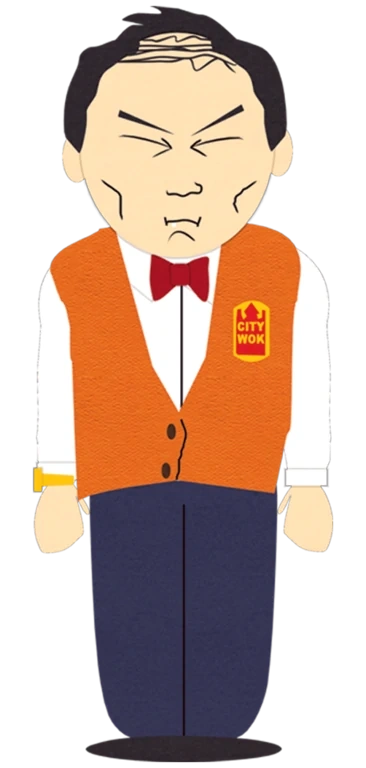

Our Story

Tuong Lu Kim
Owner & Founder
Welcome to City Wok. My name is Tuong Lu Kim, and I am the owner. I came here a long time ago with an idea: make food. We got fresh things from the city, and we put it on a plate for you to eat. No big vision. No fancy philosophy. Just food.
We work hard, but we don't have to be happy about it. You want food, we have food. That is the story. Now you know. Go eat something.
What We Believe In
Hard Work
We work very hard. It is a long day. Very long.
Food Stuff
We believe in giving you food. You will eat it. Probably.
No Problems
We have no problems here. If you have a problem, that is your problem.